Problem Statement
In this assignment, we had to combine our previous 3D printing and laser cutting knowledge with existing hardware parts to create a moving assembly. The assignment prompt was:
Model an assembly with more than one part, with at least one moving part, in Onshape. Fabricate your assembly by laser cutting or 3D printing or a combination of both. You may use fasteners (including push-in rivets or any other fastener), dowels, pins, glue, rubber bands, tape, etc! But the motion should be intentional, smooth, and robust.
Brainstorming
This week, my goal was to make something fairly simple. In past weeks, I tried to take on complex projects with mixed amounts of success. I wanted to maintain my sanity by taking on something simpler for this project. This goal lasted all of five minutes before I went on the internet and tried to find inspiration for the assignment. I went down the Pinterest and Thingiverse rabbit holes of complex mechanisms. I added some inspiration to my Pinterest board for this class.
I was about five seconds away from creating an aperture box before I remembered my earlier goal of simplicity. Though that project would have been a lot of cool motion, I knew it would be difficult to complete within the span of a few days. Luckily, I found this image on Pinterest:
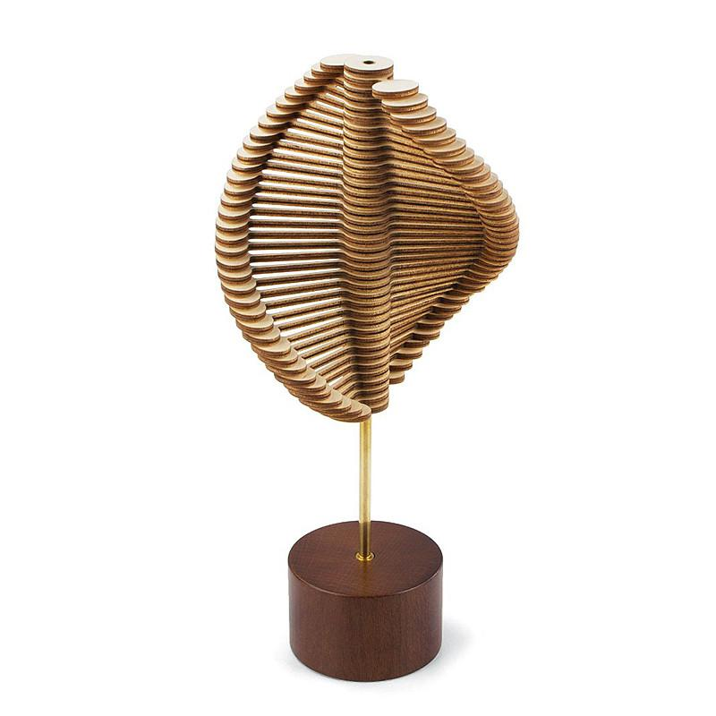I saved it to my board and happened to look out my window and see a gorgeous evergreen tree silhouetted against the sky. The two ideas came together and I knew that a cool, well-scoped project for this week would be a kinetic evergreen.
Armed with a cool new idea, I started to brainstorm. I wanted to 3D print the base and center the entire tree around a rod or dowel, but I had a lot of open questions around branch materials/shape, spacers, and the top of the structure. The results of my brainstorming are pictured here:
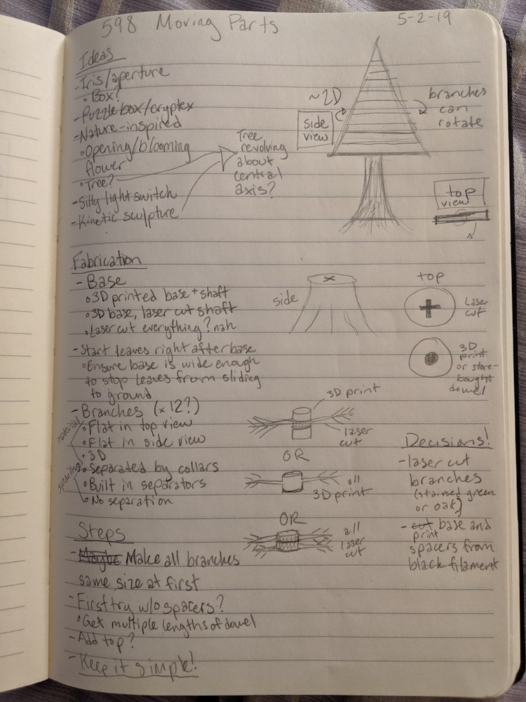Eventually, I decided to start with a 3D printed base, a structure centered around a wooden dowel, and simple square branches without spacers in between. I kept going back to the guiding priciple of "keep it simple" and decided to try other options if I wasn't happy with the initial iteration and if I had more time.
The Digital Part
I started with the trunk of the tree. I wanted to create a lofted root-like shape with a dowel-sized extruded hole. I had a few issues getting my Loft to work until I moved the upper shape to a plane offset by 4.5in on the z-axis. The lower shape was a bunch of freeform curves styled to look like tree roots. I lofted the shape up so high because I wanted it to be sturdy. Once I modeled this with the other parts in OnShape, the triangular base shape made the end form look like a rocket ship.
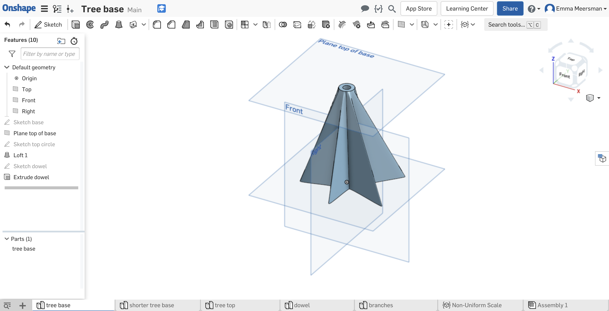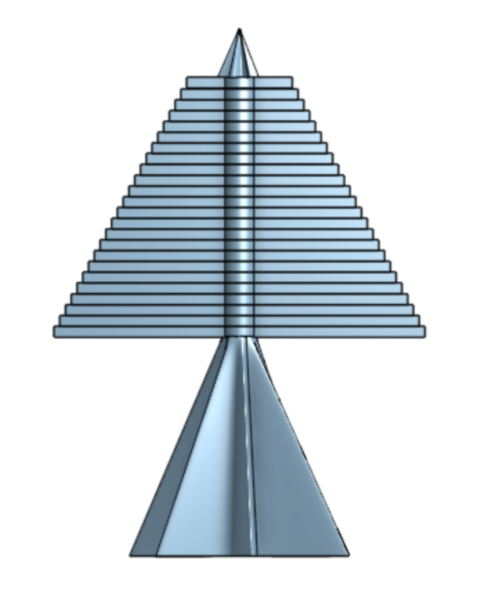
It was easy enough to loft a circle to a point and extrude a dowel-sized hole for the top of the tree. I extruded 8.5mm diameter holes from both the base and top. The dowel measured 8.4mm in diameter and I wanted to leave room for material added by the 3D printer. After modeling the entire tree together, I changed the top of the tree to be extruded from a rougher-looking set of curves instead of a perfect circle.
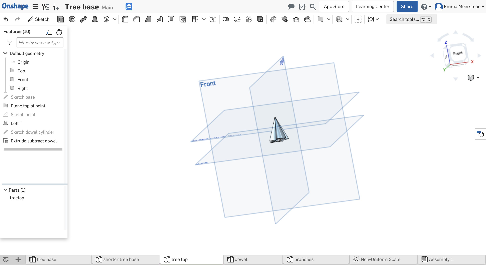I spent the most time creating the branches. My first instinct was to create a circle twice the diameter of the dowel (17mm). I then added two branches to either side of the dowel and put a circle in the middle to represent the dowel. I learned about the Trim tool to join everything together and I extruded it to the height of my plywood.
There were several problems with my initial approach. I knew that I would need to make different sizes of branches but keep the middle circle the same size. After re-thinking the problem, I decided to model the branches by themselves and apply a non-uniform scale to modify them in the x dimension. I found a non-uniform scale program online (kudos to Leon Poot, 2017 - see the comments in the script). I calculated that in order to have 24 branches and reasonable lengths for the top/bottom branches, each branch would need to be offset from the next by 6mm.
I spent a while creating 24 branches because I couldn't figure out a quicker way to apply the non-uniform scale operation in a more efficient manner. I then created a 17mm cylinder the height of one branch with the middle extruded away. I used linear transform to copy this 24 times and then merged each cylinder with its respective branch. Finally, I had 24 complete branch pieces!
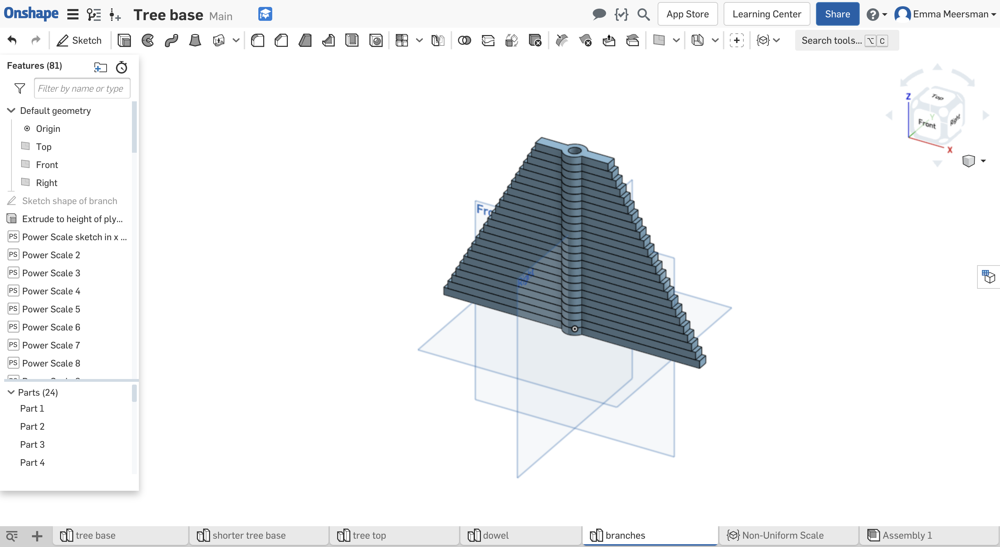Finally, I modeled the dowel as an extruded cylinder and added all of my parts to an assembly. I used the Revolute motion to model how the branches would spin about the dowel. Despite lots of Googling, I couldn't play all of the animations at once. I also struggled with the vertical placement of the branches along the dowel. I had to make a lot of adjustments to the height of the dowel and the z-offset on each branch to get everything to fit cleanly. I ended up with the following model:
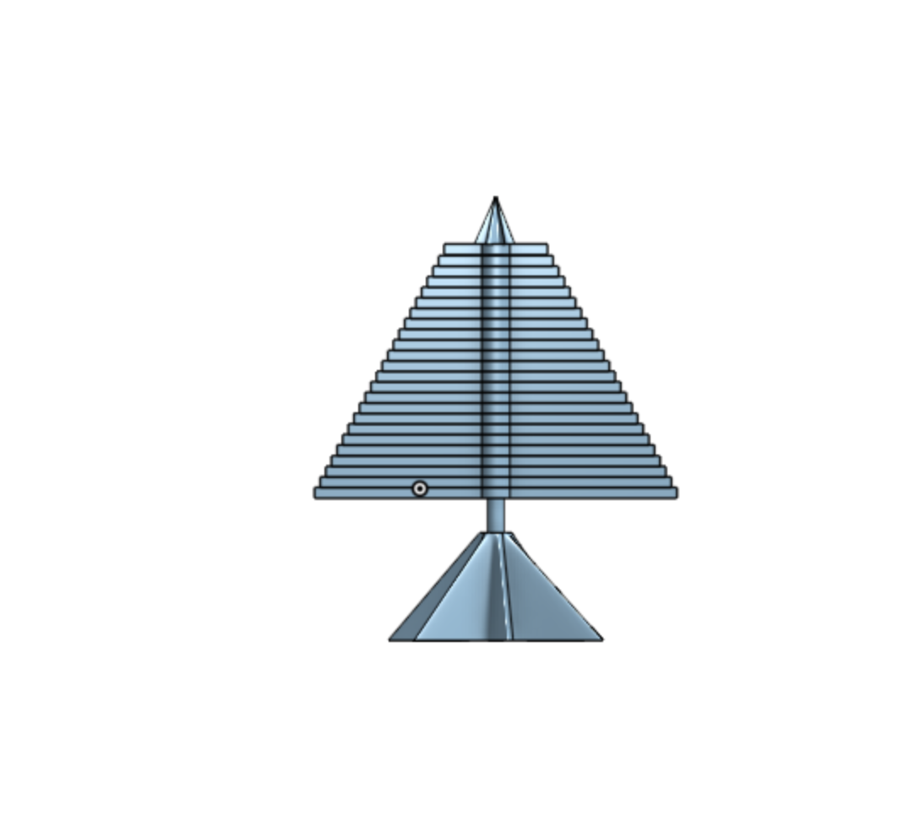Here is the link to the OnShape file for the project.
The Fabrication Part
This was where my commitment to simplicity paid off. I purchased an 8.4mm diameter wooden dowel from Blick art supplies and ended up using 7.5 inches of it. Printing the parts was quite painless and my dowel fit correctly on the first try. I didn't like the look of the base with the branches and decided to make the base half of the initial height. I wanted to style the base to look more like tree roots but I wasn't able to figure out how to loft along a curve.
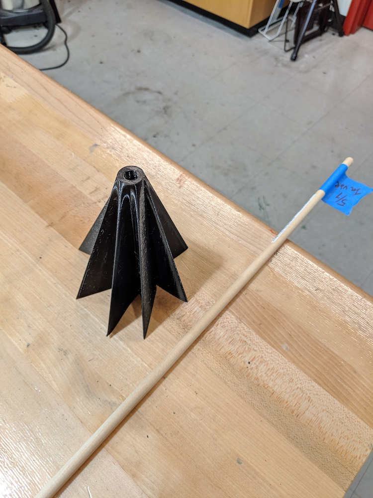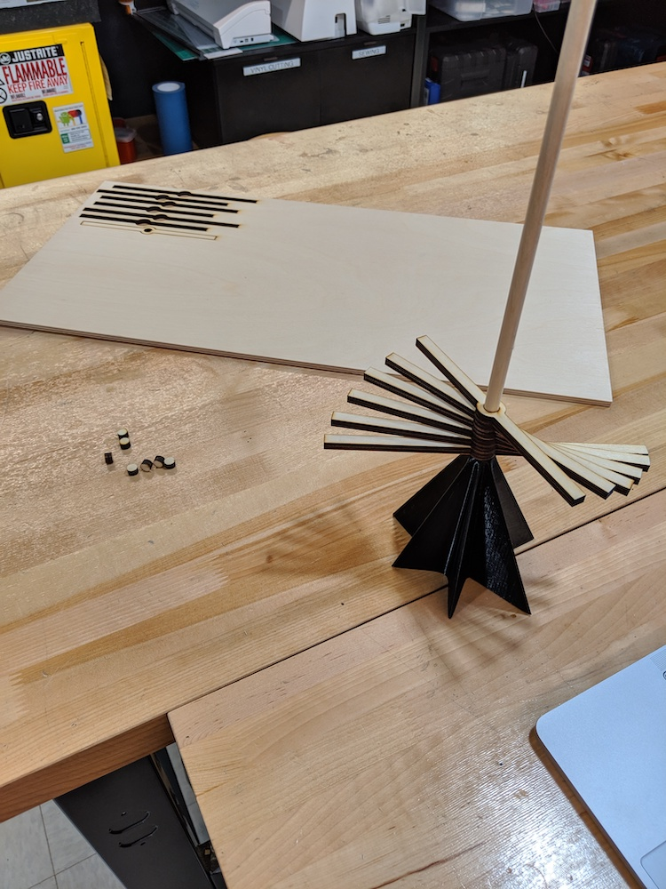
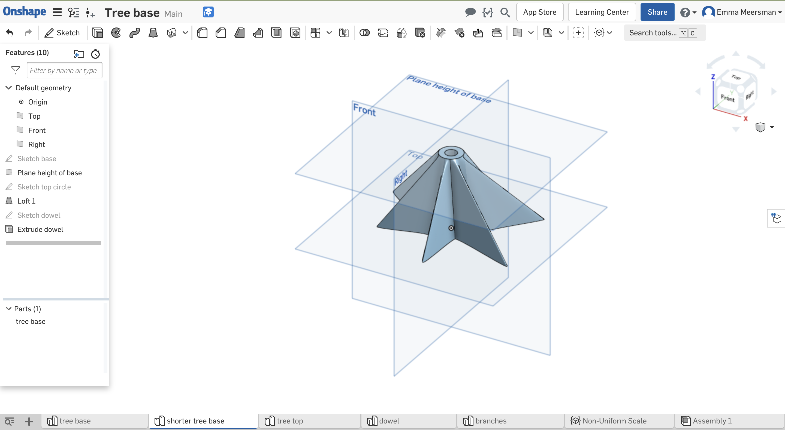
The top of the tree was fairly loose on the dowel. I wanted it to be removable but more of a press fit in order to secure the branches. I ended up re-printing both parts but the first versions were perfectly usable.
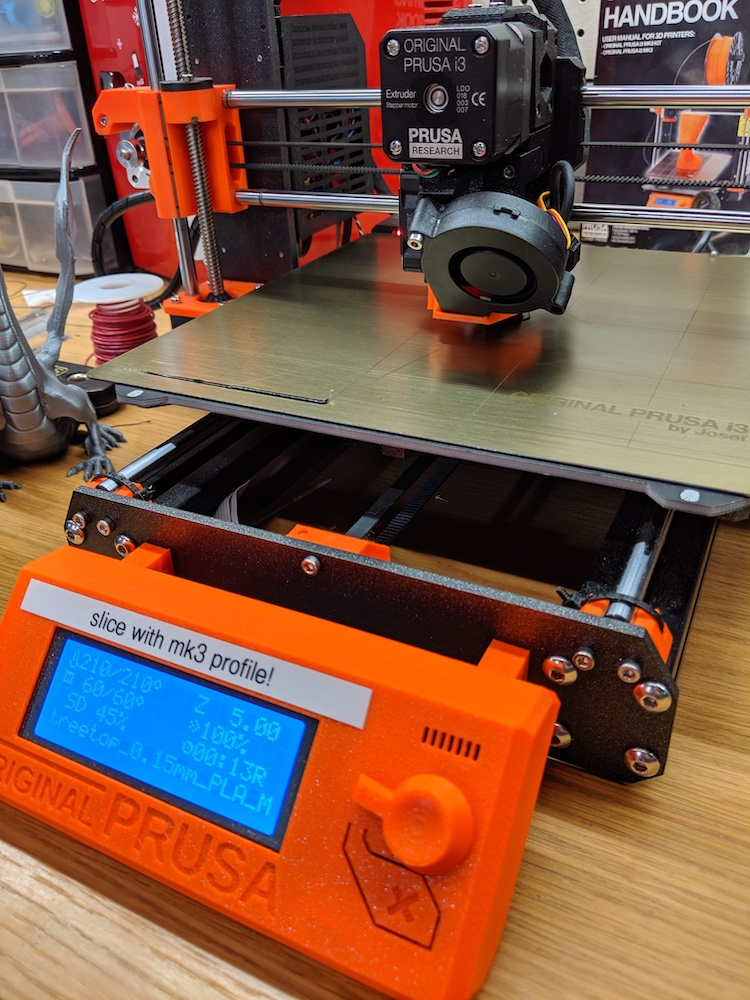I didn't know how to export all of the branches at once but was able to export each as an individual DXF file. I needed to go through some extraneous file transfers to get all of the parts into one SVG file for cutting. I used 6mm plywood at 100 power, 10 speed. I tested a few branches to ensure they would fit the dowel. There were no issues with the fit so I cut all the branches on the stained plywood. I combined these with the reprinted 3D parts to assemble my finished tree.

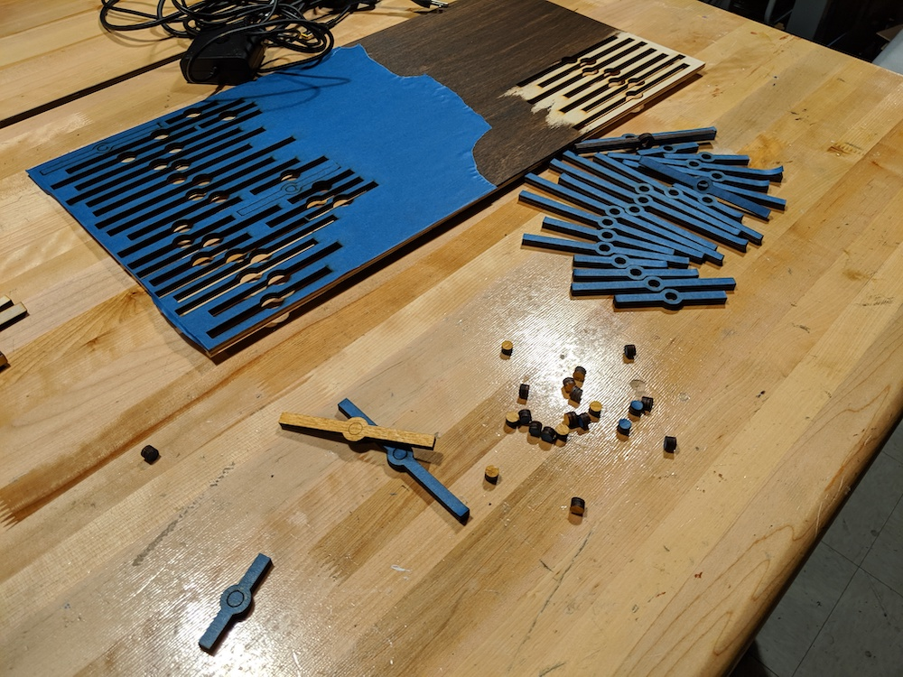
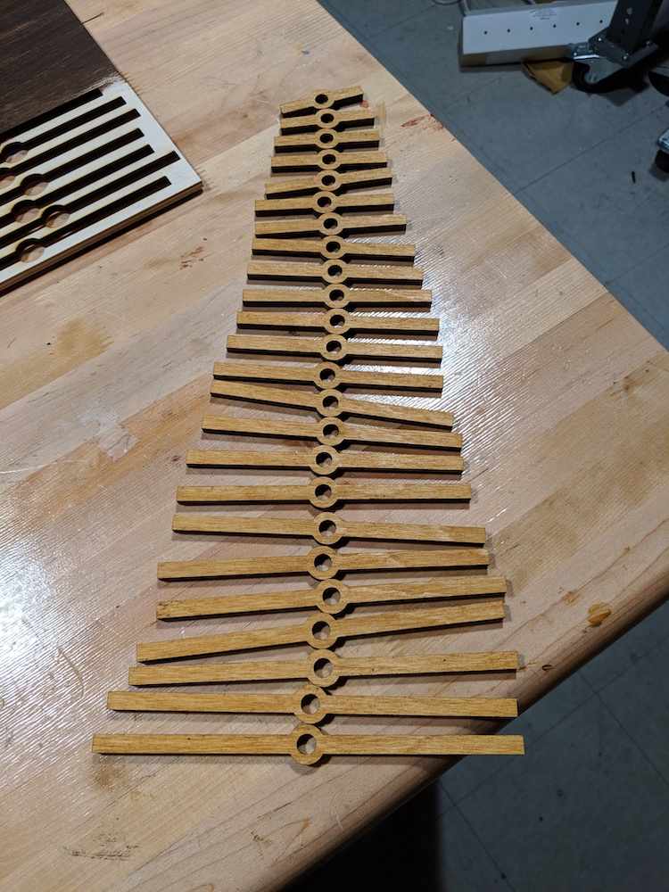
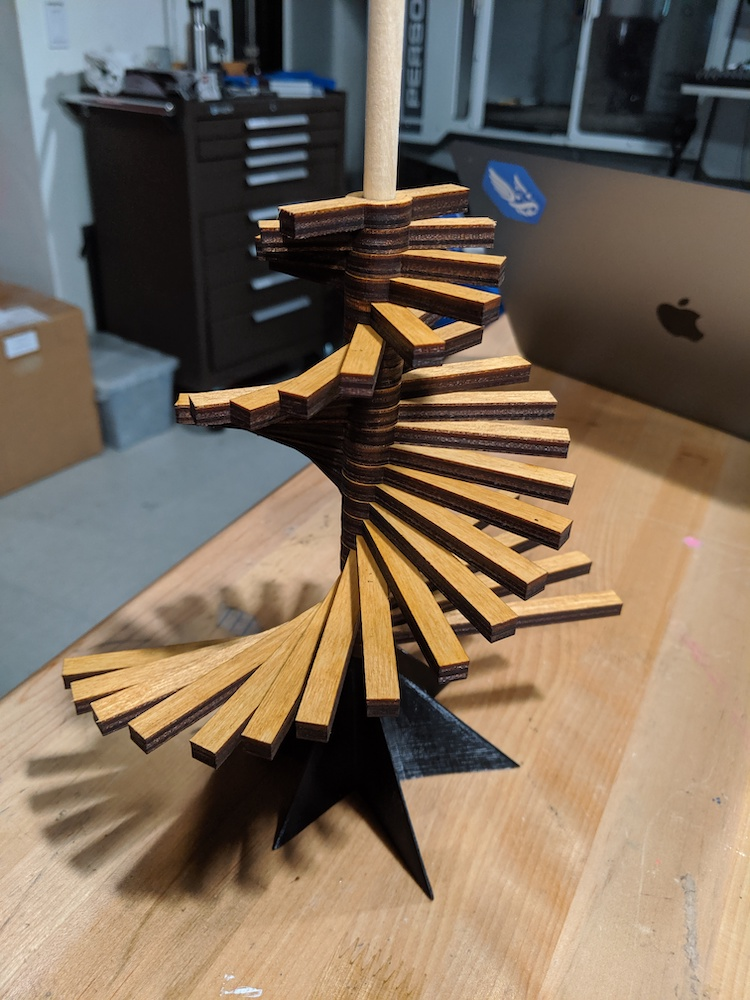
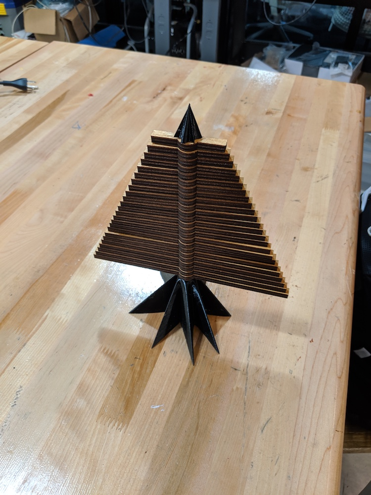
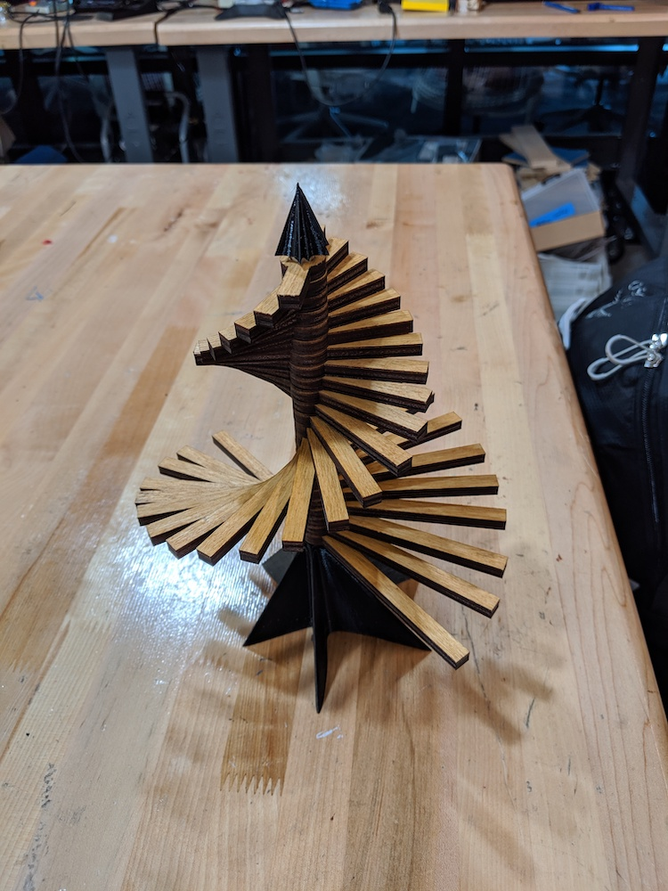
Future Work
I kept this project simple but left plenty of future iterations for myself. I could add more complex shapes to the tree branches. I would also like to learn how to loft along a curve in OnShape to make my tree roots look more realistic. Other future work could be to add 3D printed spacers between the branches. Overall, I really enjoyed using OnShape for this project. I found it to be an easy tool to learn and use for many practical projects. I will try to use it in future projects if the need arises.